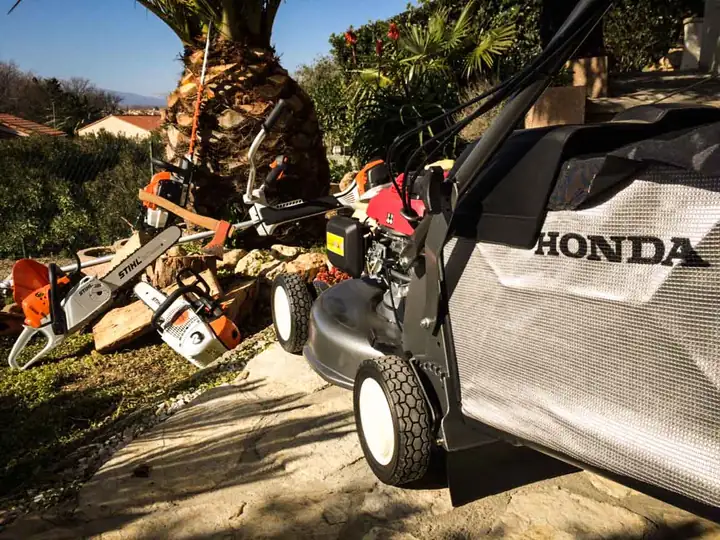
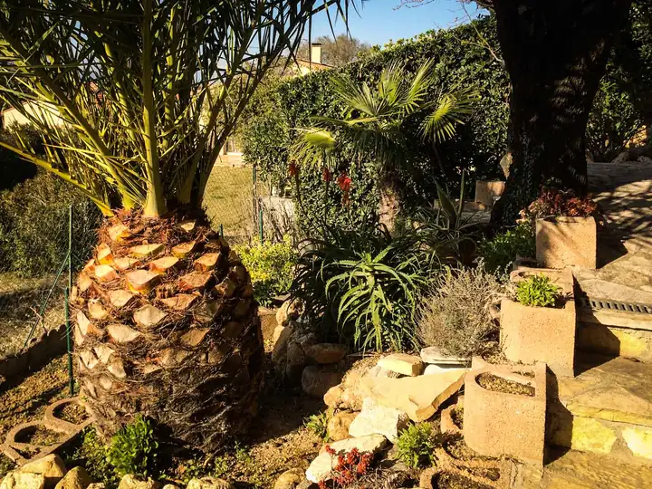
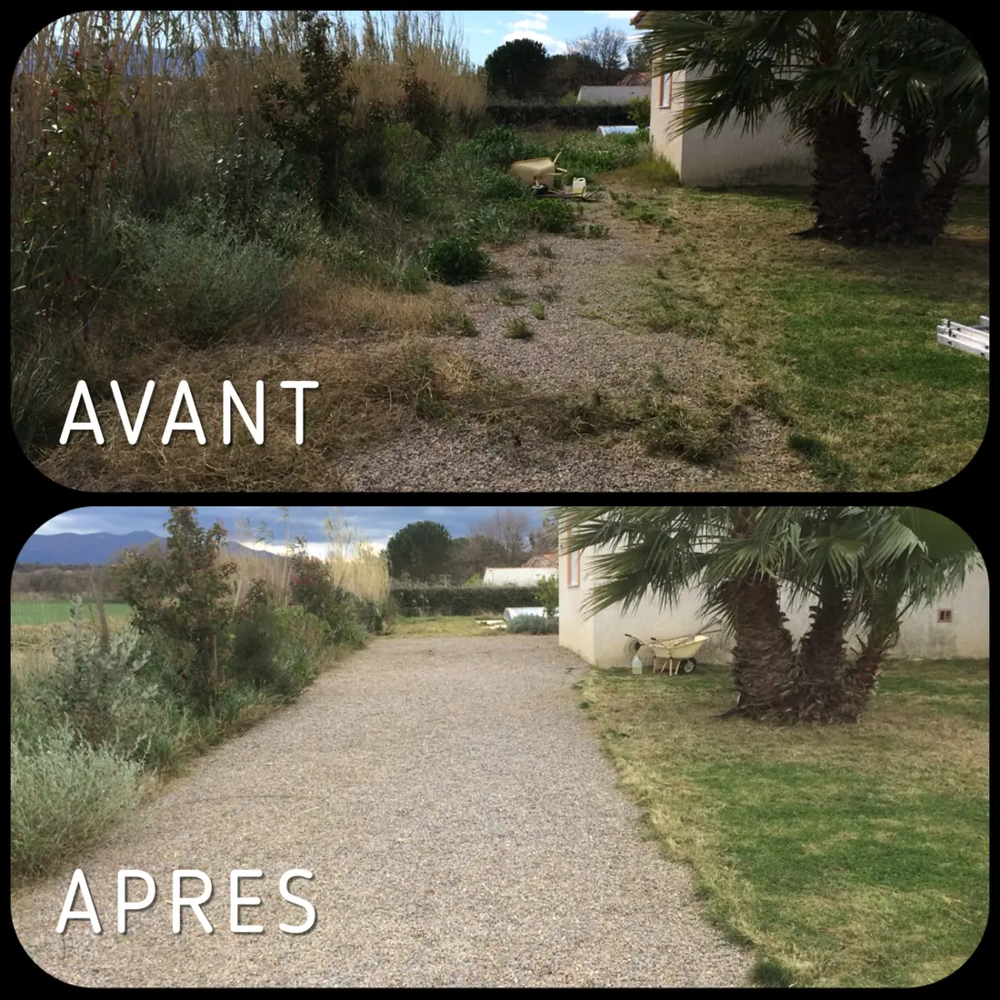
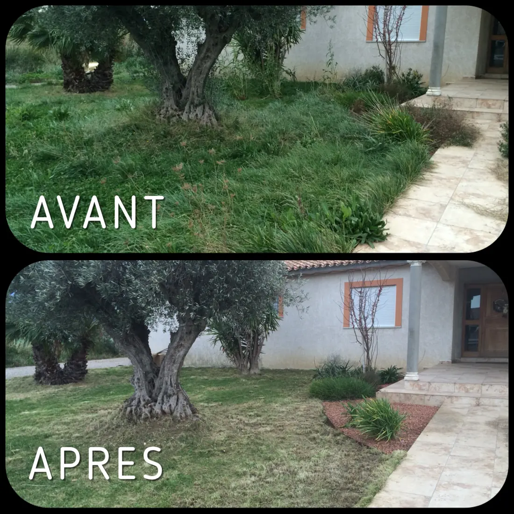
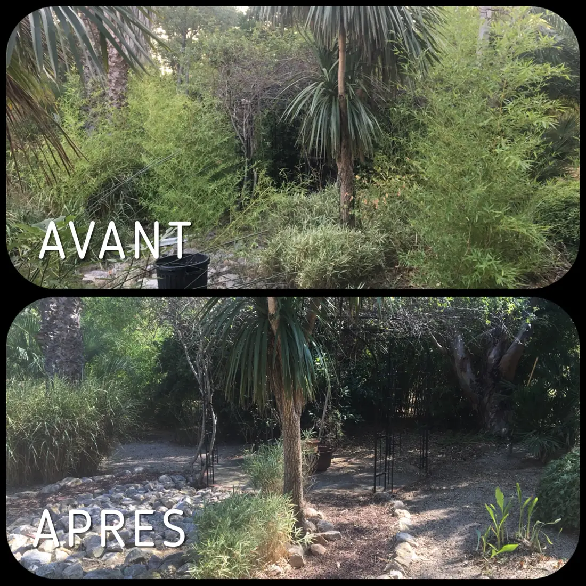

Tonte de gazon
Je peux intervenir régulièrement pour entretenir votre gazon.
Voir la prestationVotre jardin a besoin d’entretien ?
Vous avez besoin du coup de pousse, d’un jardinier ?
Faites appel à moi pour vos tâches d’extérieur autour de Perpignan.

N’hésitez pas à me contacter pour obtenir plus d’informations ou établir un devis !

Je peux intervenir régulièrement pour entretenir votre gazon.
Voir la prestation
Une haie devient un peu trop volumineuse chez vous ou chez vos voisins, confiez-moi sa taille.
Voir la prestation
L’automne a tendance à recouvrir votre jardin de feuilles ou une partie de votre jardin nécessite un bon nettoyage.
Voir la prestation
Je vous aide à arroser et vous conseille sur les besoins en eau de votre jardin. Avant d’arroser, pensez à vérifier les restrictions d’eau en vigueur dans votre commune.
Voir la prestation
Je vous conseille dans le choix des végétaux et je plante ceux que vous vous procurez. L’achat des plantes est à votre charge.
Voir la prestation
Les fleurs et arbustes nécessitent un entretien particulier, je vous aide à les faire prospérer et lutter contre les maladies.
Voir la prestation




J’exerce le métier de jardinier depuis 11 ans, après 9 ans comme chef de culture aux Serres du Soler. Je vous apporte mes connaissances dans la plantation et l’entretien des plantes et fleurs de votre extérieur.
Outre la réalisation des tâches d’entretien, je vous donnerai de précieux conseils pour aménager au mieux votre jardin et choisir les plants les plus adaptés à votre terre.
Parce que vous n’avez pas forcément le temps ou la capacité d’entretenir l’extérieur de votre maison, Un Coup de Pousse intervient pour accomplir ces tâches qui embellissent votre maison au quotidien.
Taille de haies, tonte de gazon, ramassage de feuilles… Retrouvez le plaisir d’un extérieur entretenu sans effort. Je viens avec mon matériel, et repars avec les déchets, et vous, vous gardez l’esprit tranquille.
Je vous donne un coup de pousse, mais de qualité. Je viens avec du matériel professionnel et repars avec tous les déchets d’entretien. Profitez d’un jardin propre et entretenu après mon passage.